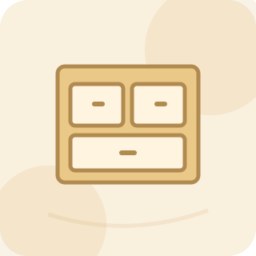

日用品
収納ボックスは、棚の内寸と取り出す動きを測る

棚に収まるボックスでも、扉の金具に引っかかったり、中に入れたい物が入らなかったりします。棚のサイズ、ボックスのサイズ、中身のサイズの順で確認すると、買う前にどこでつかえるか分かります。
棚の奥より先に、入口のいちばん狭い所を測る
扉をいつも開ける角度まで開き、蝶番や扉の縁を含めた通り道の幅を測ります。棚板の奥行きは、背板から扉を閉じたときの位置まで。配線や巾木、棚板を支える金具が出ている所があれば、そこで入る大きさを測ってください。
ボックスの外寸と内寸を分けて照合する
たとえば棚の中の幅が43 cm、入口が41 cmなら、外寸幅42 cmの箱は棚の中では収まっても正面から入りません。外寸幅40 cmの候補でも、横に取っ手が出る場合には、取っ手を含む最大幅をメーカーの寸法図で確認します。
中に入れる物は、最大幅だけでなく箱の底の内寸まで見ます。口が広く底が狭い箱は、表示される内寸が上部の値かもしれません。立てて入れたいファイルなら、ファイルの高さと厚みを揃えた状態で測ると分かりやすくなります。
ふたを開ける余裕と、手を入れる隙間を取る
棚に入れたまま使うなら、指を取っ手に入れる隙間と、ふたを動かせる高さも測ります。重い物を収納するときは、箱と棚それぞれの耐荷重を確認してください。箱の外形を段ボールに描き、棚の前で引き出す動きを試すと、寸法表では分かりづらい持ち替えや干渉も確認できます。
買う前に確認すること
- 蝶番や扉を含む入口の最小幅
- 取っ手込みの外寸と底の内寸
- ふたを開けたり手を掛けたりできる余裕